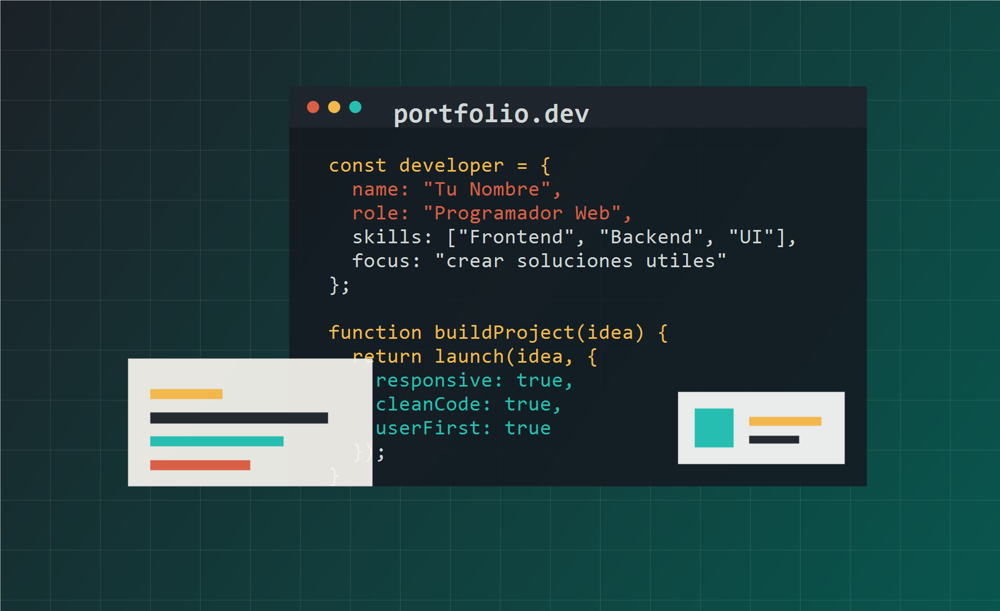

Resumen
El portafolio fue creado como una presentacion formal de programador web, con una identidad visual tecnica, navegacion clara, enlaces reales de contacto y secciones editables para crecer con nuevos proyectos.
Sitio profesional multipagina para presentar perfil, proyectos, habilidades y contacto con cambio de idioma y modo claro/oscuro.

El portafolio fue creado como una presentacion formal de programador web, con una identidad visual tecnica, navegacion clara, enlaces reales de contacto y secciones editables para crecer con nuevos proyectos.